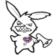

We The Free
We The Free is an animal advocacy organization focused on ending animal exploitation and promoting veganism through grassroots activism and community building.
Anonymous For The Voiceless
Anonymous For The Voiceless (AV) outreaches the public using footage from farms and slaughterhouses. It holds an abolitionist stance against all forms of non-human animal exploitation and promotes a clear and direct vegan message.
The Nottingham chapter of AV holds outreach events once per month. If you want to get involved, read the info page below and join the Nottingham Facebook group.
Nottingham Animal Rights
Text
Plant Based Nottingham
Text
Rescure Not Retail
Recue Not Retail is a brand new campaign born in Nottingham, aiming to raise awareness on the global pet trade. Millions of animals suffering within this sordid industry in the UK and beyond, and we need to speak up for them!
- Main Website: www.rescuenotretail.co.uk
- Facebook: www.facebook.com/share/18jjYKKNqV
- Instagram: www.instagram.com/rescuenotretail
- Email: rescuenotretailcampaign@gmail.com
Veggies Catering
Veggies is a volunteer-led, community-based, social enterprise, catering at campaign rallies & community festivals, family celebrations & green gatherings.
- Main Website: www.veggies.org.uk
- Shop: www.veggies.org.uk/shop
- Contact Page: https://www.veggies.org.uk/contact/